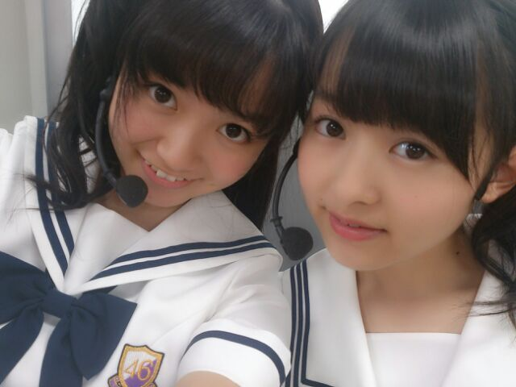
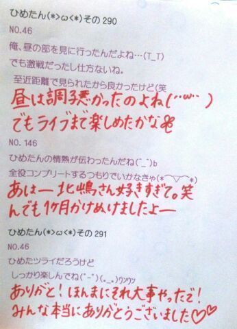

| 2013/07 27 Sat | ひめたん(*>ω<*)そ の318 |

みなさんみなさーんー
ひめたんは最近
いろんなところに傷ができるのだが
なにゆえ(´・ω・｀)つら
うーしとりあえず
今日はめざましライブでした！
去年に引き続き呼んでいただきました
ほんとにアツいねお台場！
来てくださったみなさん
本当にありがとうございました(*^ω^*)
熱中症とか大丈夫ですかー？
ミスト発射はね感動したよーさすがやねー
セットリスト
ガールズルール
走れ！Bicycle
扇風機
おいでシャンプー
制服のマネキン
世界で一番孤独なLover
君の名は希望
乃木坂の詩
やー踊った踊った。
あせやばばばはーよーねほんまにもーね
夏！って感じだったー楽しかった(｀・ω・´)
みなさんと一緒になる感じが気持ちよくて
野外ライブはたまらんね///
素敵な思い出ありがとう///
とゆーことで
ライブ前のなかいさん写め貼ったっよー
ほらね髪が暗いんですよー
明日は横浜個握ですね！
服は今から決めますぺろんちょ
みなさんは明日は何着るのかなー( ^ω^ )
みなさんみなさーんー
ひめたんは最近
いろんなところに傷ができるのだが
なにゆえ(´・ω・｀)つら
うーしとりあえず
今日はめざましライブでした！
去年に引き続き呼んでいただきました
ほんとにアツいねお台場！
来てくださったみなさん
本当にありがとうございました(*^ω^*)
熱中症とか大丈夫ですかー？
ミスト発射はね感動したよーさすがやねー
セットリスト
ガールズルール
走れ！Bicycle
扇風機
おいでシャンプー
制服のマネキン
世界で一番孤独なLover
君の名は希望
乃木坂の詩
やー踊った踊った。
あせやばばばはーよーねほんまにもーね
夏！って感じだったー楽しかった(｀・ω・´)
みなさんと一緒になる感じが気持ちよくて
野外ライブはたまらんね///
素敵な思い出ありがとう///
とゆーことで
ライブ前のなかいさん写め貼ったっよー
ほらね髪が暗いんですよー
明日は横浜個握ですね！
服は今から決めますぺろんちょ
みなさんは明日は何着るのかなー( ^ω^ )

 ひめたんとねねのペアーは
ひめたんとねねのペアーは
なんて呼べばいいの？
な、なかいさんではないか...
なんか思い付いたら教えてねー♪
勉強するときに、
何か、心がけてることはありますか？
数学なんかは、3分考えてわかんない問題は
もう自力じゃとけないから
誰かにききなさい、って言うよね(´・ω・｀)
わからん問題はあんまし悩まない人ですー
生まれて初めてみた映画ってなんですかぁ
記憶に残ってる中でいちばん古いのは
何だろう。ドラえもんとかになるのかなー
ちっちゃい頃はおばあちゃんがよく
映画館連れてってくれました！
最近は全然行ってないなー...
どちらかといえばDVDになってから
おうちでまったりみるのが好き派です＊
一番好きなスポーツはなんですかー？
やるならバスケかな( ^ω^ )
ドッジボールもすきだよー♪
見るのはなんでもすきー
勉強が忙しくてあんまり
イベント行けなくなっちゃうんだけど
どうすればいい?
その真心は会場まで届いてるよ( ^O^ )
ありがとう！
そしてひめたんも応援するよー
おうちまで届くといいな。
海派、山派。どっち？
海一択。
山は虫がおるので苦手ですー
虫に刺されやすい体質です(´・ω・｀)
今までどうしても嫌だったものと
事ありますか？
給食のピーマン、持久走。
8月にツアーで札幌来てくれるけど、
ずばり！北海道と言えば何？？
今の時期は涼しいと聞いておりますよー
牧場！ななみん！
ひめたんが最近やってるおすすめのゲームを
教えてほしいな。
ゲームはやってないのよねー
アプリのゲームでさえやってないのよねー
逆になんかオススメありますかー？

今日はしっかり寝ましょ＊
(＊´・ω・＊)
コメント(216)
2013/07/27 00:00